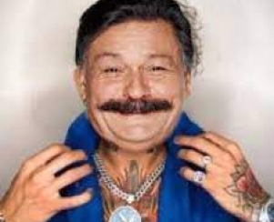
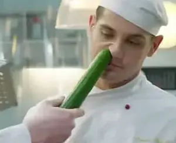
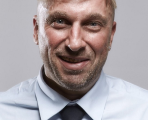
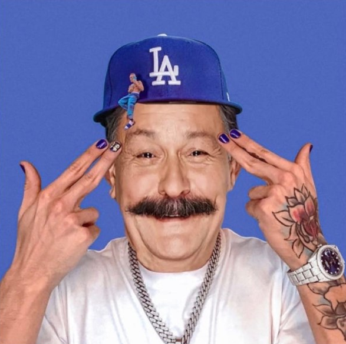
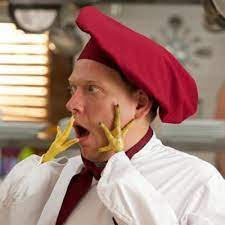
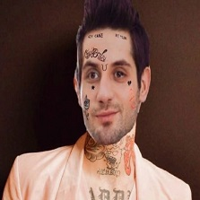

В ГЛАВНЫХ РОЛЯХ

шеф

огузок

2012
Россия
Комедия
Вкусная комедия
Дмитрий Дьяченко
Жора Крыжовников
Антон Федотов
Василий Куценко
Игорь Тудвасев
Димитрий Ян
Вячеслав Муругов
Эдуард Илоян
Виталий Шляппо
Сергей Дышук
Денис Панов
Иван Канаев
Константин Кравцов
Тим Павелко
22 октября 2012
параш2007
“Ну, нормальная такая игруля. Сюжет заинтересовал, но геймплейная часть не впечатлила, крипы сильно бьют.”
ОЦЕНКА: 4/5
150см дотарэпа
“Мне очень понравилось, меня засняли в этом сериале, но мне поставили по географии 2, поэтому я ставлю самую худшую оценку.”
ОЦЕНКА: 4/5
og uzok
“Не смотрите этот сериал, он г*вн*, я в нем снимался.”
ОЦЕНКА: 5/5